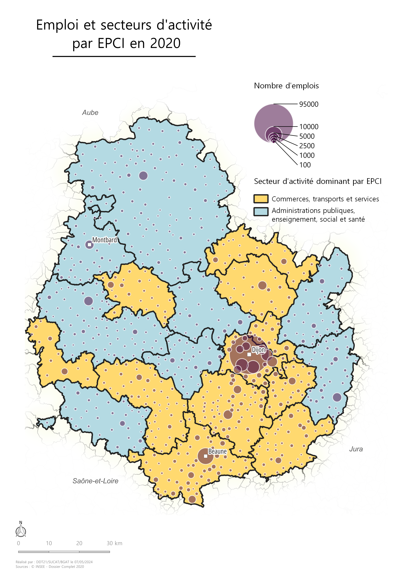

Bienvenue sur mon portfolio Github. Je voulais créer quelque chose de simple et accessible pour vous présenter quelques productions cartographiques et graphiques
que j'ai réalisé au cours de mon alternance. Ainsi, voici quelques cartes et graphiques que j'ai tirés de mon projet d'atlas cartographique.
Mes cartes
Carte des secteurs d'activité

Cette carte se trouve dans la partie introductive de l'atlas, plus précisément dans le thème "socio-démographie".
L'objectif était de montrer notamment avec le secteur dominant les pôles d'emplois et les employeurs par EPCI, pour ensuite proposer des analyses prospectives.